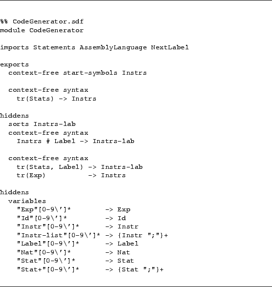
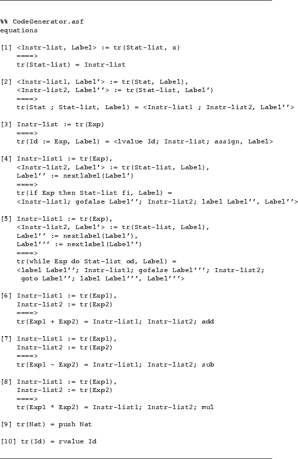

It remains to define a function `tr' that translates statements into
instructions. During code generation we should generate new label names for
the translation of if- and while-statements. This is an instance of a
frequently occurring problem: how do we maintain global information (in this
case: the last label name generated)? A standard solution is to introduce an
auxiliary sort (Instrs-Lab) that contains both the generated instruction
sequence and the last label name generated so far.
The Sdf part[ (Figure )]CODE:codegenerator.sdf and the
Asf part[ (Figure )]CODE:codegenerator.asf
of module CodeGenerator define
the actual translation function.
Figure 59:
Asf+Sdf specification for CodeGenerator
|  |
Figure 60:
Asf+Sdf specification for
CodeGenerator
|  |
This completes the specification of our code generator.
Jurgen Vinju
2006-03-04